Page 1 / 原始页码 825
第43章 植物基因组学
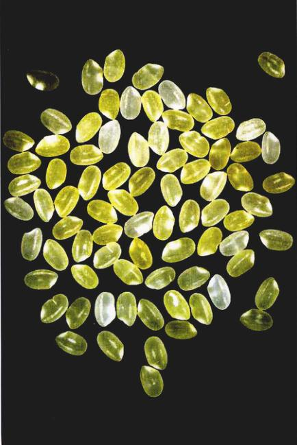
图 43.1 金黄色大米 大米几乎是世界近半数人口的主要粮食，但它缺少维生素A。缺少维生素A导致许多视觉和免疫疾病。现已经培育出了能产生维生素A的转基因大米。这种大米之所以是金黄色，是因为其生物合成途径已被改造，能够生成维生素A的前体——金黄色的 β-胡萝卜素。这里，将白色大米与金黄色大米混到一起，金黄色颜色的深浅显示了维生素A前体含量的差异。
自从农业社会开始，人们就通过选择性地培育所需的优良性状，一直在对植物进行着遗传改良。现在所有主要的作物都是这种努力的结果。今天，我们有了强大得多的工具——DNA 重组技术，这将是本章的主题。本章将展望些新技术对植物的未来以及植物生物学研究带来的影响（图 43.1）。拟南芥和水稻的基因组测序已经完成。从这些丰富的数据库中，我们不仅有望了解很多有关植物生理学和发育的分子基础，我们必定还会对植物的进化有更深刻的理解。
Page 2 / 原始页码 826
43.1 植物基因组的组成比动物的更加多变
43.1.1 植物基因组学概述
1) 早期的方祛
在基因工程这个名词被普遍用来描述那些经 DNA 重组技术改良了的植物和动物之前，人类实际上已经是几千年历史的遗传工程师了。当农业社会形成时，农作物物种内基因库的变化就开始了。譬如，玉米和小麦种子的散播。因为它们自身没有散播种子的能力，这些驯化的植物将完全依赖人来散播种子。没有了野生水稻所具有的种子休眠机制，水稻从一种多年生植物变成一年生植物。植物的某些部位对人类及家养的动物有最大的食用价值，人们便选择性地加大其体积。它们包括种子、果实以及像胡萝卜块根那样的贮藏器官。所有这些改变都是在对特定的基因不了解的情况下完成的，是通过选择和繁殖具有人类所需性状的个体来实现的。
2) 提高产量的培育方法
20世纪初，对遗传学认识的加深加速了农作物改良的速度。农业发展中最显著的成就是杂交玉米的引入。随着玉米新品种的不断培育，人们发现，每当有害的隐性基因纯合时，这些高度近亲繁殖的玉米产量就会下降。George Harrison Shull 发现，将两个不同品系的玉米杂交可以产生具有“杂交优势”的子代。产量可提高4倍多！现在，美国几乎所有的玉米都是杂交玉米，杂交水稻的产量也能提高 20%。
育种专家现在已经转向用特定的基因来优化作物的质量（图 43.1）。虽然只有一小部分的基因和它们的功能得以确认，但是，从20世纪初人们就开始使用有效的新技术方法来破解基因组。
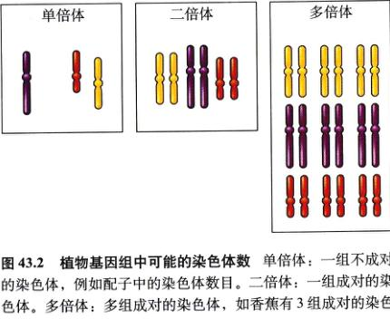
图 43.2 植物基因组中可能的染色体数 单倍体：一组不成对的染色体，例如配子中的染色体数目。二倍体：一组成对的染色体。多倍体：多组成对的染色体，如香蕉有3组成对的染色体，所以是多倍体。
3) 研究植物的基因组
植物基因组非常复杂，分析表明，DNA 序列经常会随着时间发生许多进化意义上的重大变化。植物的染色体数以及倍数也大相径庭（图 43.2）。总之，植物基因组的大小（包括所有染色体和核苷酸对的数目）显示了生物界中一个多样性最丰富的王国。例如，郁金香所拥有的 DNA 碱基对的数目是拟南芥的 170 多倍（表 43.1）。与动物一样，植物 DNA 也有序列重复、序列倒位 (sequence inversion) 或转座因子 (transposable element) 插入，这些又进一步丰富了它们的遗传信息。过去人们往往利用染色体倒位 (chromosome inversion) 以及倍数性方面的变异来构建植物物种进化的谱图（图 43.3）。现在，越来越多的研究者正在转向研究植物 DNA 序列的组成，以获取一种植物物种进化史的重要信息。
表 43.1 植物基因组的大小
| 学 名 |
俗 名 |
基因组大小
(10万碱基对) |
| Arabidopsis thaliana | 拟南芥 | 145 |
| Prunus persica | 桃 | 262 |
| Ricinus communis | 蓖麻 | 323 |
| Citrus sinensis | 甜橙 | 367 |
| Oryza sativa spp.javanica | 水稻 | 424 |
| Petunia parodii | 碧冬茄 | 1221 |
| Pisum sativum | 豌豆 | 3947 |
| Avena sativa | 燕麦 | 11315 |
| Tulipa spp. | 郁金香 | 24704 |
Page 3 / 原始页码 827
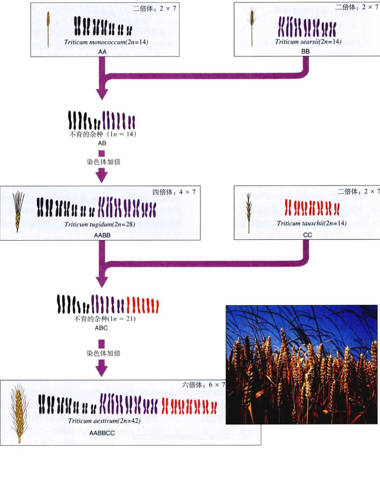
图 43.3 小麦的进化史 人工种植的小麦首先出现在亚洲西南部，即现在伊拉克所在地的山区。那里汇集了大量小麦属 (Triticum) 的草本植物。人工种植的小麦 (T. aestivum) 是 Triticum 的多倍体物种，它是通过两个所谓的“异源多倍化”过程而产生的。①两种不同的二倍体物种（这里简化为 AA 和 BB），杂交形成 AB 多倍体，这种物种差异很大以至减数分裂时 A、B 染色体无法配对，所以 AB 多倍体是不育的。然而，在有些植株中，染色体数目会由于减数分裂时染色体没有分开而自动加倍，生成可育的四倍体物种 AABB。这种小麦就被用于生产面食。②同样，四倍体物种 AABB 与另一种二倍体物种 CC 杂交，又经过一次加倍后，生成六倍体小麦 AABBCC。这种面包小麦在全世界广泛种植。
Page 4 / 原始页码 828
43.1.2 植物基因组的组成
1) 低、中等和高拷贝数 DNA
大多数种子植物含有的 DNA 数量大大超过了编码和调节作用所需的数量。因此，对植物而言，基因组中实际上只有很小比例的编码基因与产生蛋白质有关。基因组中编码多肽转录基因的部分常被称为“低拷贝数 DNA” (low-copy-number DNA)。因为包含这些基因的 DNA 序列以单个或者少数的拷贝出现。植物那么多过量的 DNA 插入基因组中有什么作用呢？很明显，这些序列变化大多发生在那些非编码区。
中等拷贝数 DNA (medium-copy-number DNA) 主要由编码核糖体 RNA (rRNA) 的 DNA 序列组成。rRNA 是一种转录得到的信息 RNA (mRNA) 翻译成蛋白质的模板。在植物基因组中，rRNA 基因可能会重复成百上千次。相反，动物细胞一般只有 100 至 200 个 rRNA 基因。植物基因组中有关 rRNA 基因的数量及其突变的变异程度，为分析植物物种的进化模式提供了一种有用的工具。
植物细胞也可能含有以高度重复序列形式出现的过量的 DNA，或称为高拷贝数 DNA (high-copy-number DNA)。目前这些“高度重复的 DNA”在植物基因组中的作用还不清楚。玉米基因组中大约有一半是由那些类似逆转录病毒的 DNA (retroviral-like DNA) 组成的。像动物的 HIV 病毒那样的 RNA 逆转录病毒利用它们寄主的基因组来复制它们自己的 DNA，并将这些 DNA 插入到寄主的基因组中。显然，有些逆转录病毒是有毁灭性的。玉米如何接受如此大量的外源 DNA 是进化上的一个谜。
2) 序列的复制和倒位
在植物基因组中高拷贝数 DNA 序列可能很短，就像核苷酸序列“GAA”，也可能要长得多，包括几百个核苷酸。此外，单个高拷贝数 DNA 序列的拷贝总数只能达到 1 万 ~ 10 万。有关高拷贝数 DNA 序列在植物基因组中是如何形成的，存在着几种可能性 (图 43.4a)。单个重复 DNA 序列的几个拷贝可能按相同的方向排列在一起，这种模式被称为“简单串联重复” (simple tandem array)。另一种情况是，重复的 DNA 序列以同一方向，即重复 / 单拷贝散布 (repeat/single-copy interspersion) 或相反的方向，即反向重复 (inverted repeats) 分散在拷贝 DNA 中。除此之外，几组重复的 DNA 序列还可能以多种可能的排列方式，同时出现在植物基因组中，像“复合串联排列” (compound tandem arry) 或“重复性的散布” (repeat/repeat interspersion)。重复 DNA 序列的存在极大增加了植物的基因组的大小，也为寻找和鉴别单独的单拷贝基因增加了难度。因此，鉴别单拷贝基因就如同“大海捞针”。
许多机制能够说明植物基因组中出现高度重复 DNA 序列的原因。通过将特定染色体区域的 DNA 多次复制，将此 DNA 序列放大，就可能生成重复的序列。减数分裂中染色体的不等交换或者转座因子的活动 (见第12章)，也可能产生重复序列。
3) 转座因子
正如第18章所述，转座因子 (transposable element) 是特殊的 DNA 序列，可以从基因组上的一个位置转移到另一个位置。它们可以从某处突然切下来，而插入到另一个位点。因此，转座因子一直被称为“跳跃基因” (jumping gene)。转座因子插入到基因的编码区或调节区。这种插入将影响基因的表达，导致可检测或不可检测的突变 (图 43.4b)。Barbara McClintock 首先报道了玉米的转座因子，并因此荣获 1983 年的诺贝尔奖 (图 18.23)。
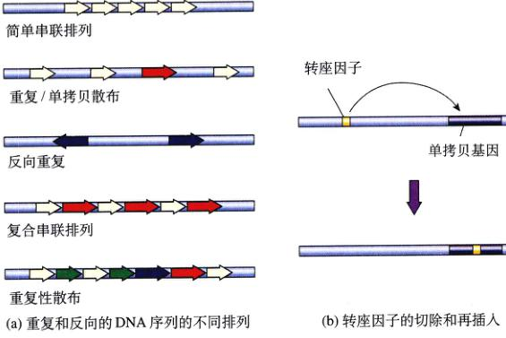
图 43.4 重复 DNA 序列的组织和转座因子改变基因功能的机制 (a) 重复的 DNA 序列在植物基因组中能以几种不同的排列形式出现。图中的箭头表示 DNA 重复序列。颜色和大小相同的箭头表示彼此相同的基因，箭头的指向表示 DNA 序列的方向。(b) 转座因子是重复 DNA 序列的来源，基因的功能随之改变。转座因子可从其原来的位置切下来，然后再插入到包含一个基因的单拷贝 DNA 序列中，并改变该基因的功能。
Page 5 / 原始页码 829
由于它们具有独立复制并在基因组中移动的能力，转座因子也可能产生重复的 DNA 序列。人们相信，玉米中大量的似反转录病毒的插入 (retroviral-like insertions) 就可能造成这种情况。基因组中特定位点的重复 DNA 序列的滞留可能引发转座因子本身的突变，使它丧失转座的能力 (capacity to transpose)。
4) 叶绿体基因组及其进化
叶绿体是一种进行光合作用的细胞器，它能在植物体内独立地复制。植物叶绿体拥有自身独特的 DNA，且与细胞核中的染色体是分开的。这种 DNA 是由母体遗传得到的，编码独特的叶绿体蛋白。有人认为，叶绿体源自一个能进行光合作用的原核生物，这种原核生物由于内吞作用而成为了植物细胞的一部分 (见第35章)。已有研究表明，叶绿体 DNA 拥有许多像原核生物一样的特征。它与原核生物的染色体 DNA 类似，也是双链环状 DNA。此外，叶绿体 DNA 中含有编码核糖体的基因，这出现在原核生物中的核糖体基因非常相似。
所有陆生植物叶绿体中的 DNA 都具有几乎相同的基因数 (大约是 100)，而且排列的次序也相同。与植物细胞核中 DNA 的进化相比，叶绿体 DNA 的进化更加保守。因而当人们研究 DNA 序列的相似性时，它提供了一个更容易解释的进化模型。叶绿体 DNA 也不容易被重组产生的转座因子和突变所改变。
虽然光合作用所需要的蛋白质大部分还是由核基因所编码，但叶绿体 DNA 编码的很多蛋白质与光合作用有关。随着时间的推移，细胞核和叶绿体基因组之间似乎已经发生了一些基因交换。比如，在光合作用的卡尔文 (Calvin) 循环中，最关键的酶由大小两个亚基组成。大亚基由叶绿体基因编码；小亚基则由细胞核基因编码。编码小亚基的基因拥有一段靶序列，它使小亚基能够进入叶绿体与大亚基结合。这些基因定位的进化史依然是个谜。
叶绿体基因组的一个典型特征是，在 DNA 序列中出现了两个反向的回向重复 (inverted repeat) 的序列 (图 43.5)。其他的 DNA 序列极少发生反向 (inversion) 或者删除作用，但是，一旦发生了，它们就可能作为分析植物间进化关系的特征或工具。比如，在菊科向日葵属植物中，其叶绿体 DNA 有一个大的反向序列，而在其他科的植物中却没有出现。先前有关植物系统关系的研究工作多侧重于植物解剖学和形态学上的对比分析，如今，植物像叶绿体 DNA 序列这样的分子数据正越来越广泛地被采用。
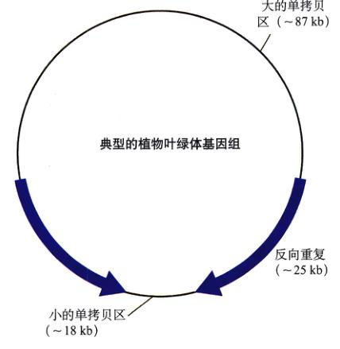
图 43.5 叶绿体基因组 一个典型的植物叶绿体基因组示意图，包括2个单拷贝基因区域，其中一个包含大约 87 000 个核苷酸 (87 kb)，另一个大约是 18 kb；另外还有2个对称的反向重复序列，每个 25 kb。叶绿体 DNA 不会发生核基因组中常见的染色体重组事件，因而可以作为分析 DNA 系统发生的良好材料。
43.1.3 比较基因组作图和模式系统
随着研究 DNA 序列的新技术的出现，我们对植物基因组的认识逐步加深。而在这一方面的深入了解使我们更好地操纵基因特性。比如农作物产量、抗病性、生长能力、营养价值、抗旱性。这些特性中每一个都由多基因编码。通过基因组作图 (genome mapping) 使植物模式化，植物生物学家为将来植物的培育以及从基因水平上认识植物的进化奠定了基础。水稻作为一个模式系统被选中是因为它的基因组较小，与其他谷类作物有很高的染色体保守性。从基因组的意义上看，“水稻就是小麦”。植物另外一个模式系统就是拟南芥 (Arabidopsis)。这种芥菜类的野草具有特别小的基因组。它只有 20% 的重复 DNA (表 43.1)，这使得测定它的全序列比较容易。如下面将讨论的，进一步达到单个碱基对的检测水平是一个渐进的阶梯过程。
Page 6 / 原始页码 830
1) RFLP 和 AFLP 可作为绘制基因组图谱和检测多态性的工具
在染色体上线性地确定每个基因，经典的办法是将它与已经通过突变确定了的基因杂交。重组的概率就可以用来计算两个遗传标记物 (genetic markers) 之间亲缘关系的远近 (见第13章)。结果就是一张遗传图或连锁图 (genetic or linkage map)。这种方法仅限于那些具有等位基因，而且能通过表现型得以鉴定的基因。更多的基因组可以使用限制性片段长度多态性 (restriction fragment length polymorphism, RFLP) 来作图，这样就不需要有宏观表现型。注意，RFLPs 是包含一个或多个基因的部分 DNA 片段。这种方法在第19章详细讨论过 (图 19.2、图 19.4、图 19.9 和图 19.10)，包括 RFLP 图谱的分析，或者用限制性内切酶在特定位点剪切所获得的 DNA 片段的模式分析。将克隆得到的探针与凝胶电泳分离出来的 DNA 片段进行杂交，可以确定该限制性片段长度的多态性 (RFLP)。RFLP 能很快确定基因组图谱中变化的区域。有关序列的数据则需要以计算机为基础的复杂的检索和匹配 (matching) 系统。目前最密集的 RFLP 图谱存在于水稻中，12条染色体上绘制了 2000 个 DNA 序列。
另外一种应用序列可变性的工具是 AFLPs，或称为扩增片段长度多态性 (amplified fragment length polymorphisms)。基因组中的 DNA 片段先用限制性内切酶 (通常是 EcoR I 和 Mse I) 切断，然后利用聚合酶链式反应 (PCR) 扩增，得到的 PCR 产物代表了被限制性酶切断的每一段 DNA，这些片段根据其大小通过凝胶电泳可分开。与 RFLPs 一样，AFLPs 通过与克隆探针杂交进行鉴定。因为整个基因组在凝胶上都能看得见 (图 43.6)，AFLP 凝胶条带上的比 RFLP 图谱上的表现出更大的多态性。RFLP 和 AFLP (在许多其他基因组分析工具中) 都可以为通过杂交从亲本传给后代的遗传特性提供标记。
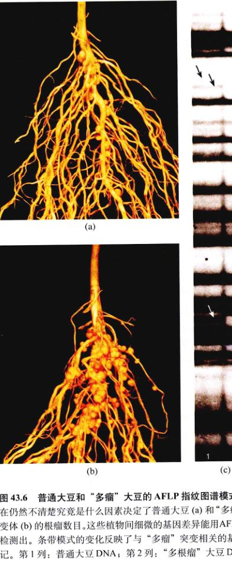
图 43.6 普通大豆和“多瘤”大豆的 AFLP 指纹图谱模式 现在仍然不清楚究竟是什么因素决定了普通大豆 (a) 和“多瘤”突变体 (b) 的根瘤数目。这些植物间细微的基因差异能用 AFLP (c) 检测出。条带模式的变化反映了与“多瘤”突变相关的基因标记。第 1 列：普通大豆 DNA；第 2 列：“多瘤”大豆 DNA。
2) DNA 微阵列
如何使得 DNA 序列为研究者所用，而不仅仅是一大堆电子信息的数据？DNA 微阵列 (DNA microarray) 是一种将序列与基因功能的研究联系起来的方法，它使得 DNA 序列可用于很多方面。这种检测某种特定基因的便捷方法也被称为生物芯片 (biochip) 或者“芯片上的基因”，我们在第19章已经做过讨论。通过机械手将 DNA 片段固定在显微载玻片上指定的位置，从而制成特定的 DNA 微阵列。3.24 cm² 的面积就可排列多达 10 000 个样点 (图 43.7)。微阵列主要的用途是确定某组织在发育时或受环境因素影响时哪些基因得以表达。这些组织中的 RNA 被分离出来后，可作为微阵列的探针。只有那些在组织中得以表达的序列才能在微阵列上产生杂交。
Page 7 / 原始页码 831
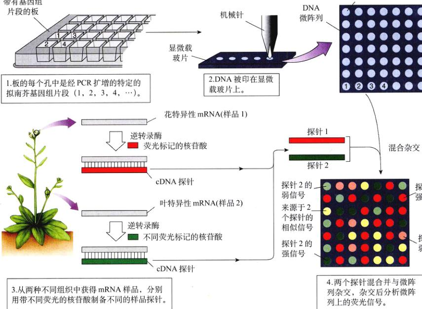
图 43.7 微阵列 PCR 用于扩增基因组中的非冗余基因。借助一个机械针将这些基因片段分别点样到显微载玻片上，形成一个微阵列。然后，此微阵列用待研究的靶组织来源的 RNA 来探测，以确定表达的 DNA。带有杂交探针的微阵列经分析后通常以假彩色图像显示出来。如果某基因在一个样品中频繁表达，微阵列中这个基因所对应的荧光信号就强 (红或绿)；如果某个基因在一个样品中很少表达，信号就弱 (粉红或浅绿)，黄色表示在每个样品中表达水平相近的基因。
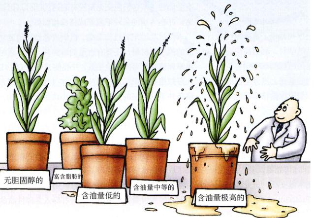
图 43.8 这是未来植物油基因工程产品的方向吗？ (图中标识：无胆固醇的、富含脂肪酸的、含油量低的、含油量中等的、含油量极高的)
3) 植物基因组计划
完成植物全部基因测序的潜力很大，并且即将实现，因为拟南芥的基因组计划已经完成。这个计划代表了生物学研究之旅的一个新的范例。这一国际性的目标把许多研究小组联合到一起，它们都有能力和决心把新的测序技术应用到整个基因组，而不是单个基因。强大的数据库将被建立起来，使人们更易得到想要的信息。被完全测序的拟南芥基因组将会在农业以及进化分析上有广泛的应用 (图 43.8)。这些信息有望将有助于植物培育者，因为一种植物的基因定位，有助于指示那个基因将在另一科植物中可能出现的位置。在植物基因组中，局部基因顺序 (local gene order) 比同源基因的核苷酸序列更保守。这样，通过利用相关基因组的位置以及序列相似性等信息，拟南芥基因组的全序列将有助于从许多植物中克隆基因。
Page 8 / 原始页码 832
水稻基因组序列为基因组序列较小的单子叶植物提供了一个范例。选择水稻的一部分原因就是它的基因组分别比玉米、大麦和小麦小6倍、10倍和40倍，这些谷物代表着人类的主要食物。从 DNA 序列水平上解析了解稻的基因组之后，我们将更易于分离并分离具较大基因组的谷物的基因。水稻、玉米、大麦、小麦和其他草本植物虽然在 5 000 万年前就已经分化，但它们的染色体中仍有大量保守的片段 (图 43.9)。对于鉴定与疾病抗性、农作物产量、营养价值以及生长能力等相关的基因，谷类作物 DNA 序列分析起着重要的作用。绘制祖先的谷类作物的近似基因组图也是有可能的。
4) 功能基因组学和蛋白质组学
测定拟南芥和水稻的基因组序列体现了重要的技术成就。生物信息学作为一个崭新的学科，利用尖端的计算机技术来分析不断扩大的基因组数据以寻找各基因组之间的关系，并可在已知序列的基础上推测基因的作用。基因组学 (基因组的研究) 如同齿轮轮转般地退回为假说推动的科学。全世界的研究者已经又一次联手共同完成一项计划——2010年前为拟南芥所有的 2万 ~ 2.5万个基因确定功能 (2010 工程)。这个目标将从许多方面最终回答我们在第37章到第42章中所提出的问题。工作的第一步是要确定这些基因在何时、何处得以表达。任何进一步的工作都需要有效的技术做支撑。研究方向将会从基因组学转向蛋白质组学 (Proteomics) (研究一种生物中所有的蛋白质)。由于翻译后的修饰以及蛋白质复合物的形成，蛋白质的研究要困难得多。但这种信息对于理解细胞生物学、生理学、发育和进化都是必需的。比如，相似的基因如何在不同的植物中产生在生化和形态学上截然不同的器官？所以，在许多方面我们将继续探索孟德尔曾提出的问题，但是是在截然不同的组织水平上进行研究的。
43.2 植物组织培养技术的进步正在使农业生产发生着变革
43.2.1 植物组织培养概述
植物基因工程中一个很重要的目标是将新确定的基因用于生物技术，而组织培养技术正是推动这一进程。虽然在农业上有应用价值的基因仅仅是开始。利用第19章讨论过的且在下面还将继续讨论的方法，我们可以把所需的基因导入植物细胞中，产生转基因细胞和转基因组织。以后，整株植株都可以利用组织培养的方法重新生。既然动物都可被克隆，植物的克隆过程应该简单得多。许多植物个体 (而不是生殖细胞) 都具有全能性，即它们能把先前没有表达的部分基因重新表达，并在合适的条件下发育成整株植物体。
要成功地培养植物细胞、组织或者器官需要利用适当的植物原材料，还要有合适的培养基，以及适时地利用激素使它尽可能完全生长，并促使其分化 (图 43.10)。大多数植物组织培养都是从外植体 (explant) 或者在无菌的条件下从整株的植株上取下的小块组织开始的。当将外植体放在含有养分、维生素以及各种植物激素的培养基中时，组织的细胞将开始分裂，增生。在合适的培养条件下，植物细胞将增殖，形成器官 (根、茎、胚、叶原基等)，甚至成长为整株植物。从组织培养的植物细胞重新生成整株植物体是生产基因工程植物的重要一步。利用植物组织培养方法，人们就可以对培养中的细胞进行单独的基因操作，从而产生带有导入基因性状的整株植物。
Page 9 / 原始页码 833
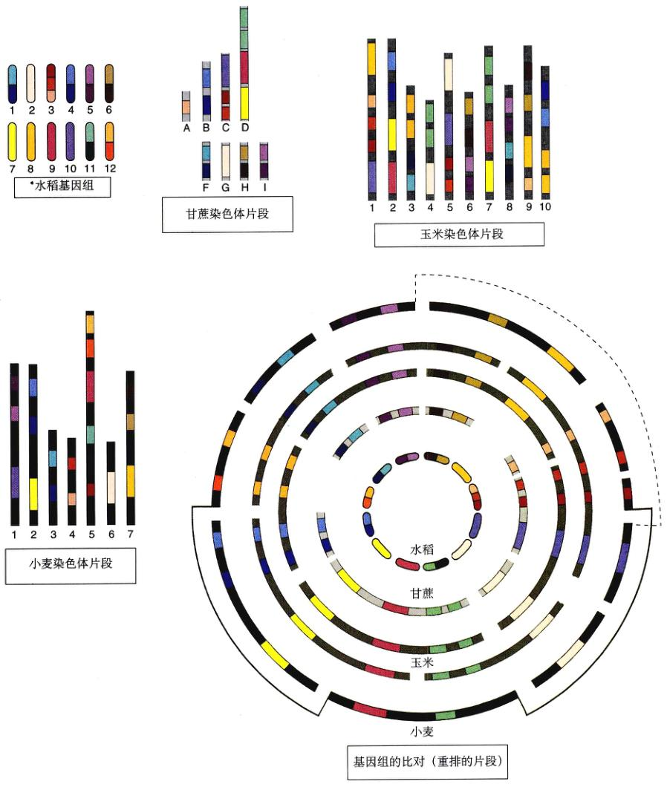
图 43.9 谷类基因组是一些相似染色体片段的重排 相同的颜色代表的 DNA 片段在各物种中都是保守的，但是发生了重排。线状图显示这些保守的 DNA 片段在各个物种的染色体中的位置。环状图上排列着禾本科植物的保守片段 (但不是全部的染色体)。将主要草本植物的各个染色体分成片段并将其中重新排列，研究者发现，水稻、甘蔗、玉米以及小麦的基因组分成高度保守。这暗示了随着这些草本植物的进化，祖先草本植物基因组中的片段顺序已经通过基因重组而发生了重排。
Page 10 / 原始页码 834
43.2.2 植物组织培养的类型
根据用于外植体的植物组织的类型以及培养基成分的不同，植物组织培养有许多不同的类型。这些不同类型的植物组织培养不仅可以用于基础性的植物研究，而且还应用于商业植物的生产。
1) 愈伤组织培养
愈伤组织培养 (callus culture) 是指对一大堆无组织的植物细胞生长的培养。为了产生愈伤组织培养，将通常含有分生组织细胞的外植体培养在含有某些植物激素，如生长素和细胞分裂素的培养基中 (图 43.11)。那些细胞从外植体中开始生长并分裂形成一群未分化的细胞，称为愈伤组织 (callus)。这团无组织的活细胞就像一个瘤。如果它们定期地转到新的培养基中，它们就能无限在增生。但是，如果这些愈伤组织被转移到一个含有不同植物激素组成的培养基中，这些细胞就能被定向诱导分化出根 (和) 或者茎。这一将无组织的细胞转变为生成根和茎的过程称为器官发生 (organogenesis)。它代表了一种通过组织培养的细胞再生整株植物的方式。当通过器官发生生成的幼苗足够大时，它就可以转移到一个大的含营养成分或者土壤的容器中继续生长成成熟植株。
2) 细胞悬浮培养
细胞悬浮培养 (cell suspension culture) 指单个或多数植物细胞在液体培养基中的生长。细胞悬浮培养的第一步就是把植物愈伤组织细胞转移到一个液体培养基中。这个液体培养基含有各种植物激素以及促进细胞群体解体成单个细胞或者小团细胞 (图 43.12) 的化学物质。细胞的持续生长要求慢速摇晃液体培养基以促进通气以及与培养基的化学交换。悬浮细胞培养经常应用于必须获得单个细胞的研究。悬浮液为挑选具有耐药性和耐盐性等所需性状的细胞提供了一个有效的方法，因为它同时与所有的细胞有相同的接触，这与愈伤组织不同。采用愈伤组织的方法，只有那些与固体培养基接触的细胞才能通过培养基中添加化学试剂而挑选出来。悬浮培养还为生产并收集植物细胞分泌的化学物质提供了方便的途径。其中包括可能括重要的植物代谢物，像营养产品、油和药物物质等。此外，植物悬浮细胞培养也常用来生产整株植物，这个过程即所谓的体细胞胚发生 (somatic cell embryogenesis) (图 43.13)。
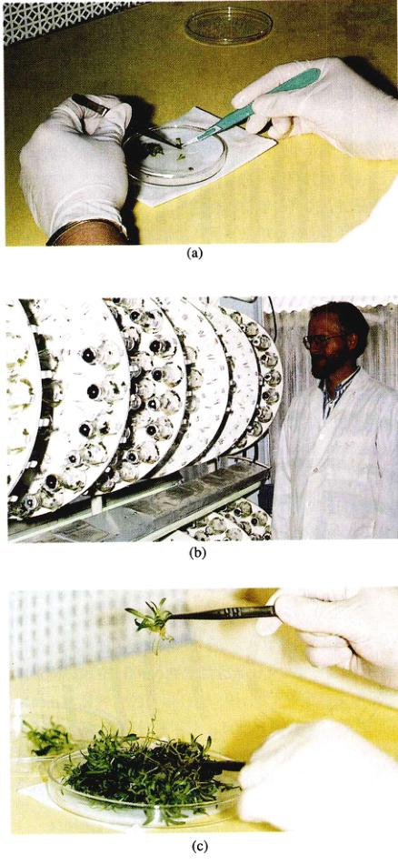
图 43.10 兰花的培育 一株兰花的自然成熟需要近七年的时间，商家能在相对短的时间里生产成千上万株组织培养的兰花。(a) 从一株兰花上切下顶端分生组织。(b) 分生组织在瓶中生长，其中含有增强激素的培养基，根和枝条开始形成。(c) 然后幼苗被分离，长成成熟植株。
Page 11 / 原始页码 835
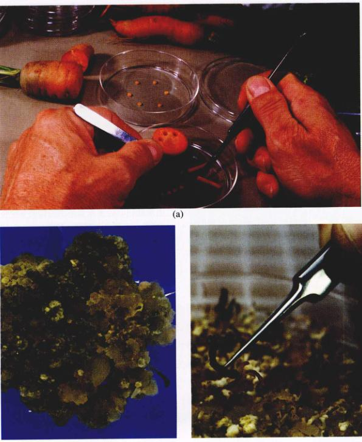
图 43.11 愈伤组织培养 (a) 在培养基中培育外植体。(b) 细胞生长、分裂形成愈伤组织。(c) 在含有植物激素的培养基中生长的愈伤组织分化出植物的各个部分。(d) 待幼苗足大时，移至土壤中发育成熟。
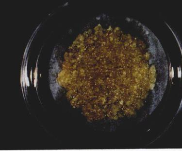
图 43.12 细胞悬浮培养 植物细胞能够以单个细胞或者小团细胞的形式在液体培养基中生长。植物细胞的液体悬浮培养确保了大多数细胞能与生长介质接触。
对有些植物而言，在单细胞水平上实现基因工程改造后，这种方法为整株植物的再生提供了更加便捷的方法。体细胞胚形成过程中，植物悬浮培养细胞被转移到含有复合激素的培养基中，这些激素能促进细胞的分化和组织形成，并形成单个的胚。在解剖显微镜下，这些胚可以分离出来，转移到一个新的培养基中，并长成单独的植物体。
3) 原生质体的分离和培养
原生质体是植物细胞通过酶解解除厚的细胞壁后剩下的、只有细胞膜包围的细胞体。植物原生质体对研究植物细胞极其有用，因为这层膜平时与细胞壁紧密结合，很难得到。质壁分离后，几小时内原生质体通常又开始重新生成细胞壁。所以，这一过程对研究植物细胞壁的再生同样有用。用电穿孔 (electroporation) 的方法很容易将外源 DNA 转化进入原生质体内 (见 840 页)。除此之外，来自不同植物的原生质体可通过施加外力融合在一起形成杂合体。
Page 12 / 原始页码 836
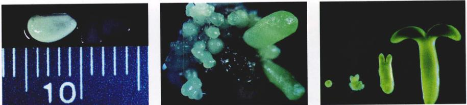
图 43.13 体细胞胚发生 大量的植株能通过体细胞胚发生的方式从单个大豆种子获得。(a) 培养基中未成熟的大豆种子；(b) 在培养基中培养两周后，种子上出现胚；(c) 处于发育不同阶段的4种胚 (球状、心型、鱼雷状、幼苗)；(d) 有枝和根的幼苗；(e) 成熟的大豆植株。
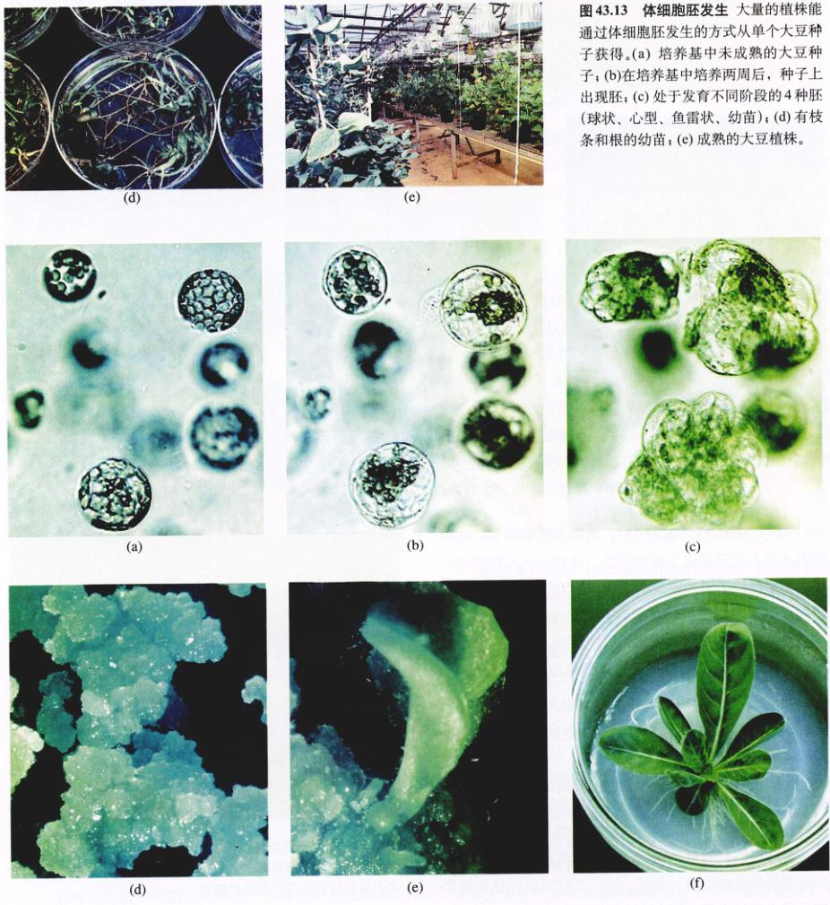
图 43.14 原生质体再生 从月见草的单个植物细胞原生质体再生出完整植物体的不同阶段。(a) 单个植物细胞原生质体；(b) 细胞壁的再生和细胞分裂的开始；(c)、(d) 细胞分裂导致植物细胞聚集，可形成愈伤组织；(e) 从愈伤组织产生体细胞胚；(f) 体细胞胚通过图 43.13 所述的过程重新生成幼苗。
Page 13 / 原始页码 837
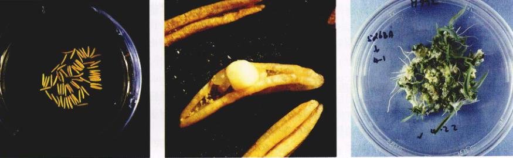
图 43.15 花药培养 玉米花粉形成愈伤组织。含有花粉的花药能在培养基中再生。花药中的花粉含有一组单倍染色体，加倍后可生成纯合的二倍体细胞。再生的纯合二倍体植株对于植物培育来说非常重要。(a) 培养基中的玉米花药；(b) 花粉形成的愈伤组织；(c) 愈伤组织和枝条的形成。
如果原生质体融合得到的杂合体能生成整株植物体，则它们将代表一种自然界从来没有发生过的基因重组。因此，原生质体融合技术就为基因工程提供了另一种方法，使得物种亲缘关系很远的植物也可互可相整合有和性状。当单个或者融合后的原生质体转移到培养基中时，细胞壁就开始再生 (图 43.14)。一旦愈伤组织形成，完整的植物体就能在培养基中产生了。
4) 花药 / 花粉培养
花药是花中含花粉的解剖学结构。花正常发育时，花药成熟后裂开，散播花粉。进行花药培养时，将花药从植物的花中切下来，转移到适当的培养基中。经过一段时间后，花粉细胞可以操作形成单独的幼苗。这些幼苗可以在培养基中生长以便用于生产成熟的植株。这些幼苗的发育通常要经历胚形成过程 (图 43.15)。通过花药 / 花粉培养得到的植物可以是单倍体的，因为它们是由花粉细胞只经过有丝分裂生成的。虽然如此，这些植物可能由于不育而对育种或者基因操作没有太大的用处。另一方面，由花药 / 花粉培养得到的植物可以在发育早期用化学试剂，比如秋水仙素处理，使其染色体加倍。染色体加倍使得不育的单倍体植株变成了可育的二倍体植株。在这种情况下，就能生成具有单一特性的纯合的植物体，甚至包括那些隐性性状。
5) 植物器官的培养
植物器官能在培养基中成长，这为研究植物器官的发育提供了有用的工具。比如，将一种植物授过粉的花 (如番茄的花) 切下，转移到含有合适的营养物的培养基中培养。一段时间后，植物的胚珠部分将会发育成番茄果实，并最终转变成红成熟。植物根也可切下一部分，放到液体培养基中生长。在培养基中，根能大量增生，形成初生根和分支的次生根 (图 43.16)。器官培养被用于研究致死性的突变体。有些致死性的胚突变体可通过培养得以挽救。这样的实验能提供有关缺陷本质的一些信息。
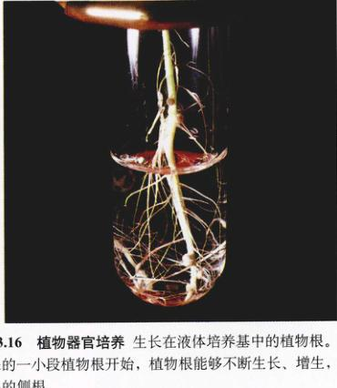
图 43.16 植物器官培养 生长在液体培养基中的植物根。从切下来的一小段植物根开始，植物根能够不断生长、增生，形成许多的侧根。
Page 14 / 原始页码 838
43.2.3 植物组织培养的应用
除了前面已经提到的许多应用，植物组织培养在农业和工业生产中还有多种用途。
1) 作为生物工厂的悬浮培养细胞
植物组织培养在工业生产中的一个重要用途便是利用植物细胞作为生物工厂。大规模的悬浮培养的细胞可用于生产抗菌化合物，抗肿瘤生物碱、维生素、杀虫剂和食品香料。植物的根也可在液体培养基中进行培养，形成一种网状根，能够产生大量包括醉酵和镇静药物在内的有用的植物化合物。
2) 园艺方面的应用
具有重要价值性状的植物能够通过组织培养克隆的方法大量繁殖。应用植物组织培养技术，一株植物可以通过无性繁殖产生成百上千甚至上万株具有相同基因的植物。这种技术已经被广泛用于鲜花生产，具有相同基因的花能够由一个优良的亲本植株产生。植物组织在无菌培养基中的繁殖也有助于生产无疾病的植物 (disease-free plant)，比如那些从分生组织培养出来的植物，它们由于是新长出来的而没有被病毒或者其他疾病侵染。这种方法对于培养无病的兰花和覆盖盆子尤为有效。
3) 体细胞克隆变异
植物组织培养也有一个难以解决的副作用，但是这种副作用在特定条件下也可被利用。植物细胞在愈伤组织或悬浮细胞培养的增长期，由于失去了对过度基因表达的控制，植物基因组的各部分可能多或少都变得活跃起来，而转座因子也变得更活跃，因而就可能发生染色体的重排。同时，培养组织的染色体数目可能会异常。这些变化为基因的多样性提供了一个新的来源，导致产生了一些新的性状，这些性状甚至在那些被作为外植体进行组织培养的原始植物材料中都没有出现 (图 43.17)。这种在组织培养增长期产生的基因多祥性被称为体细胞克隆变异 (somaclonal variation)。如果预期的目标是繁殖或生产相同的植物克隆，这就成问题了。但是，对于产生具有目前已知的基因库中并不存在的性状的新植物体来说，有目标地诱导这种经过较长时期组织培养的细胞产生体细胞克隆变异是极其有用的。有些性状可以在组织培养阶段得以确认 (例如抗病性和耐热性)，而对其他性状的分析 (如植株大小、光合作用效率等)，要等到整个植株长成之后才能进行。
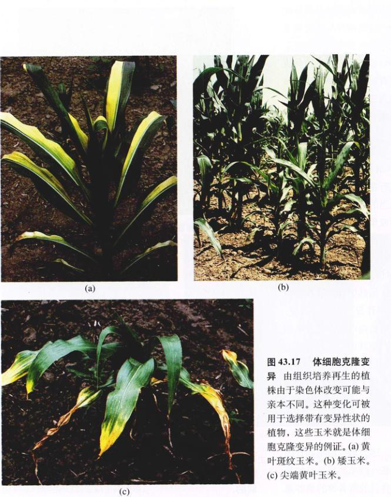
图 43.17 体细胞克隆变异 由组织培养再生的植株由于染色体改变可能与亲本不同。这种变化可能被选择带有变异性状的植物，这些玉米就是体细胞克隆变异的例证。(a) 黄叶斑纹玉米。(b) 矮玉米。(c) 尖端黄叶玉米。
Page 15 / 原始页码 839
43.3 植物生物技术正在影响着农业生产的各个方面
植物生物技术提供了一种制造一系列可被全球社会使用的新产品和新工具有效方法，农业生物技术有潜力增加农业收入，降低原材料成本，并且改善环境质量。植物基因工程技术正在成为提高粮食产量的重要工具。
43.3.1 世界人口与粮食产量的提高相关
由于农作物育种和农业生产技术上的科学进步，世界粮食生产已是 1960 年的两倍，而且，这期间农业用地的生产率和水的利用率已变为原来的3倍。然而，通过农作物育种对主要农作物进行基因改良，仍是一个缓慢的过程。此外，美国生长的大部分农作物的产量不足它们基因潜力的 50%。这些作物产量的不足很大程度上是由于农作物不能耐受或适应环境的压力 (盐、水和温度) 以及草食动物、病原体和疾病 (图 43.18)。
现在，世界耕地面积与南美洲相当，但如果没过过去 30 年的科技进步，养活全世界人口所需要的耕地面积会相当于整个西半球。然而，世界人口预计在 21 世纪前 50 年将翻倍达到 120 亿，目前的粮食生产水平能否跟上人口增长的速度尚不清楚。许多人认为，对传统农作物育种体系的开发已经达到了极限。问题是如何在这一过程中，既能最好地满足增加的数十亿人口的粮食需要，又不会严重破坏这颗星球。从这个角度看来，热带雨林、湿地和其他一些重要的环境将会加速消失，除非农业变得更多产且对环境的要求更少。我们对植物生殖过程认识的进步，将为进一步保护自然环境提供手段，以防止突变基因因野生种群扩散。

图 43.18 玉米的产量因干旱而远低于它的基因潜力 若生长季节干旱，玉米的产量会因干旱缺水而受到限制。
Page 16 / 原始页码 840
43.3.2 改进农业生产的植物生物技术
可以确定，在解决因世界人口急剧增加而带来的粮食问题时，植物基因工程技术将会发挥重要作用。通过提高高营养素的含量，例如 β-胡萝卜素，维生素 A、C 和 E 等可以保护人类健康，使其免患癌症和心脏病的营养素，农作物的营养品质正在得到改善。生物技术现在正在用于改善谷物种子的质量、提高饲料作物中蛋白质的含量，以及植物对疾病、昆虫、除草剂和病毒的抗性。此外，基因工程技术也可以用于提高植物对压力 (如高温、高盐) 的耐受水平。
与植物育种为基础的手段相比，基因工程能够缩短农作物变异所需的时周期。此外，在基因工程中，将因障碍 (genetic barrier)，比如花粉与雌蕊的相容性，将不再对不同物种的优势性状导入农作物构成限制。一个有用的性状一旦在单个基因水平上得以确认，那么将这一性状组合至一农作物中，只需将带有这些基因的 DNA 导入到农作物的基因组中即可。将一段外源 DNA 组合到一个现存的植物基因组中的过程被称为植物转化 (plant transformation)。目前，植物转化有几种方法，用根癌土壤杆菌 (Agrobacterium tumefaciens) 进行转化的过程在第19章已有记述。这一方法对双子叶植物的转化效果很好。但是，许多粮食作物，如谷类 (稻、小麦、玉米、大麦、燕麦等) 都是单子叶植物。43.3.3 节将讨论同时适用于单子叶和双子叶植物的两种植物转化方法。
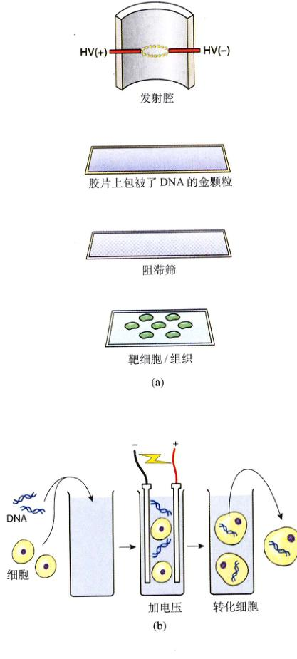
图 43.19 植物转化的方法 (a) 粒子枪是将外源 DNA 导入植物细胞的一种方法，通过放电作用将 DNA 包被的金粒射入植物细胞或组织。阻滞筛只允许 DNA 包被的颗粒通过并将断片滞留在支撑的薄膜上，这样就减少了轰击造成的细胞损伤。(b) 外源 DNA 也可由电穿孔法导入到植物原生质体中，一个短的电脉冲会在细胞膜上产生小孔，允许 DNA 进入细胞。
能被导入植物体内的有用特征
尽管植物转化代表了一种相对较新的技术，现阶段人们正广泛采用这种方法来发展具有有益特征的植物和农产品。在第19章中，我们讨论了生物技术在农作物改良中的应用。这种方法的进一步应用包括了对食物营养成分的改变，植物修复作用 (phytoremediation)，生物可降解塑料的生产，以及将植物作为可食用的疫苗。
(1) 粮食作物营养价值的改善：世界上大约 75% 的油和脂肪的生产来源于植物。由于医疗和饮食的原因，动物脂肪的使用越来越少，而越来越多地使用高质量的植物油是一种趋势。基因工程技术使得研究者能够改变种子油的生物化学成分，从而生产出可食用和不可食用的“设计油”产品。其中一种就是月桂酸 (laurate)，一种可以取代可可黄油作为饱和脂肪酸的来源。其他一些方法通过改变 ACP 去饱和酶，在转基因作物中生产单个不饱和脂肪酸。具有高月桂酸含量的菜籽油已经在一些国家种植，并且已经用在食品和肥皂中。
人们也在尝试着改变各种植物种子的氨基酸含量，以便为消费者提供一种营养养更全面的食物。一种具有高赖氨酸含量的谷物种子已被生产出来，它将会减少对目前家畜饲料中所添加的赖氨酸添加剂的需要。生物技术有潜力为人类制造出更健康、更富有营养的植物食品。水果和蔬菜 (如番茄)，能够通过基因工程改造成含有更多的维生素 A、C 和 β-胡萝卜素的食物，这些营养成分存在于人们的日常食物中，人食用后将会免患很多慢性疾病。
Page 17 / 原始页码 841
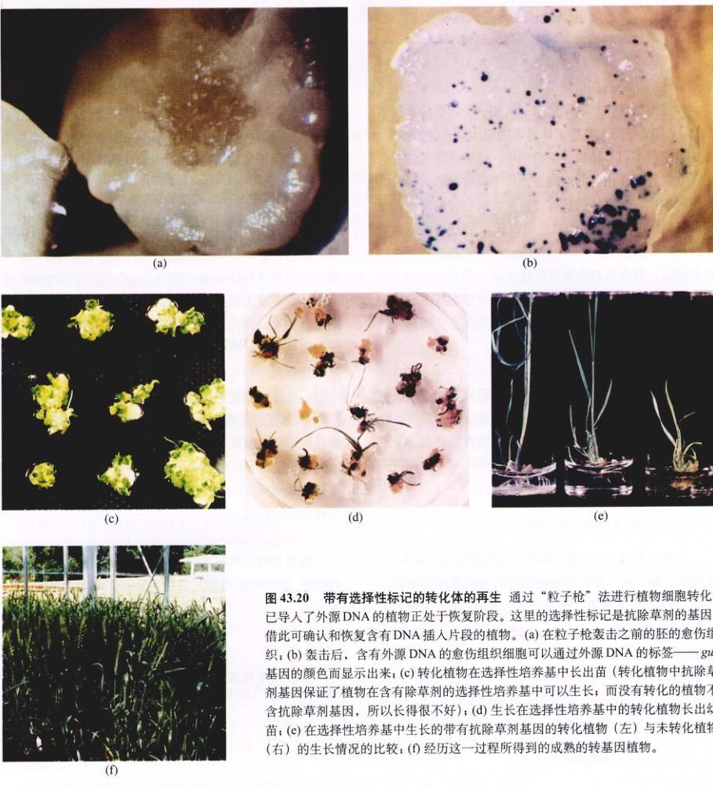
图 43.20 带有选择性标记的转化体的再生 通过“粒子枪”法进行植物细胞转化，已导入了外源 DNA 的植物正处于恢复阶段。这里的选择性标记是抗除草剂的基因，借此可确认和恢复含有 DNA 插入片段的植物。(a) 在粒子枪轰击之前的胚的愈伤组织；(b) 轰击后，含有外源 DNA 的愈伤组织细胞可以通过外源 DNA 的标签——gus 基因的颜色而显示出来；(c) 转化植物在选择性培养基中长出苗 (转化植物抗除草剂基因保证了植物在含有除草剂的选择性培养基中可以生长，而没有转化的植物不含抗除草剂基因，所以长得很不好)；(d) 生长在选择性培养基中的转化植物长出幼苗；(e) 在选择性培养基中生长的带有抗除草剂基因的转化植物 (左) 与未转化植物 (右) 的生长情况的比较；(f) 经历这一过程所得到的成熟的转基因植物。
(2) 植物的修复作用：清除环境毒素以回收被污染的土地是人类正在面临的一项富有挑战性的工作。转基因植物提供了一种很有前景的解决方法。人们正在利用那些能够富集重金属的植物开展这项工作。收获这类植物后，先将其干燥，然后再对材料进行安全处理。由于这些植物含有大量的水，干燥后可将大范围内的金属聚集到一个小的限定区域。对人类健康造成危害的有机化合物也有可能被植物吸收，转而被分解为无害的成分。
Page 18 / 原始页码 842
一些改造过的生物化学途径正在用于降解这些有毒物质。例如，经改造的白杨树可以工业化地降解 TNT。
(3) 含有抗病疫苗的植物：植物基因工程另外一种非常有趣的应用是在食用植物中引入“疫苗基因”。在这里，通过植物转化将编码抗原 (例如一个病毒的衣壳蛋白)，尤其是编码人类病原体的基因引入到香蕉、番茄或苹果等可食植物的基因组中。这种抗原蛋白将会出现在这一可食植物的细胞中，食用该植物的人将会在体内产生抗该病原体的抗体。目前，研究者正在尝试研制针对B型肝炎病毒的衣壳蛋白，即大肠杆菌的肠毒素 B，以及诺沃克病毒 (Norwalk virus) 的病毒衣壳蛋白的食用疫苗。麻疹病毒的基因已经被导入烟草中作为一种模型，现在正在导入莴苣和水稻中。对于那些很难低温保存传统疫苗 (随温度的升高，蛋白质将很快降解) 的热带地区而言，这将带来巨大的进步。
43.3.3 植物转化的方法
1) 使用粒子枪的植物转化
与动物细胞不同，植物细胞有细胞壁阻碍了 DNA 进入细胞。用“枪”轰开植物细胞并向植物基因组中引入外源 DNA 似乎不像是一种合适的方法，然而，这种方法却很奏效。粒子枪 (particle gun) 使用表面包有待射入植物 DNA 的微小的金粒，将这些颗粒以很高的速度射入植物细胞中。通过喷射高压氦气 (high-pressure helium gas) 或放电 (electric discharge) 的方法可将颗粒加速到足以穿过细胞壁的高速度 (图 43.19a)。只有部分细胞能真正接受到外源 DNA 并在这种条件下存活，这些细胞可以借助外源 DNA 上的选择性标记 (selectable marker) 得到确认。这些选择性标记只允许那些接受了外源 DNA 的细胞在特定的培养基中存活 (图 43.20)。这些选择性标记包括了那些抗除草剂和抗生素的基因，然后检查在选择性培养基中存活下来的植物细胞，以确认所需要的外源基因。
2) 使用电穿孔法的植物转化
外源 DNA 也可被“电击” (shocked) 进入没有细胞壁的细胞，正如前面所描述过的植物原生质体。在含有植物原生质体和 DNA 的溶液中，一个高压电脉冲会在原生质体细胞膜上迅速打开一个小孔，允许外源 DNA 进入细胞 (图 43.19b)。理想情况下，DNA 会组合到植物的一条染色体上。电穿孔 (Electroporation) 之后，原生质体被转移到一种培养基中进行细胞壁的再生，随后细胞分裂，最终生成整个植株。与粒子枪一样，通常在外源 DNA 上有一个选择性标记，人们可以根据它们在含有选择因子 (抗生素或除草剂) 的培养基中的存活和繁殖能力，将包含含了外源 DNA 的原生质体选择出来。一旦整株植物从电穿孔的原生质体中长成，人们将评价其是否具有有益的性状。
Page 19 / 原始页码 843
小 结
43.1 植物基因组的组成比动物的更加多变
- 与其他真核生物相比，植物基因组很大，主要是由于有大量重复的 DNA。
- 通过绘制不同植物中某些特定基因或基因性状的位置，各植物基因组之间能进行相互比较。RFLP 和 AFLP 可用于绘制基因 DNA 图谱。
- 拟南芥基因组很小，全部基因组目前已经被测序，所以所有的基因及其位置都已为人们所知。
- 水稻和其他谷物的基因组的分子图谱显示出惊人的相似性。
- 功能基因组学和蛋白质组学，可以使我们了解和运用已被完全测序的植物基因组的信息。
43.2 植物组织培养技术的进步正在使农业生产发生着变革
- 通过添加合适的复合植物激素 (生长素、细胞分裂素)，培养中的植物细胞可定向形成器官、胚或整个植株。
- 花药培养可以产生单倍体植物或所有性状都是纯合子的植物。
- 植物组织培养有许多实际应用，包括植物化学成分的工业生产，园艺植物的无性繁殖和无病植物的再生。
- 植物细胞在组织培养基中过度生长会引起基因变异的增加，称为体细胞克隆变异，这种变异会超出基因库中已有的性状，可在育种研究创造出新的变异基因。
43.3 植物生物技术正在影响着农业生产的各个方面
- 基因工程和生物技术能被用于改善粮食作物的品质，增强抗病能力，提高农作物对环境压力的耐受力。
- 植物基因工程的关键在于将外源 DNA 导入植物细胞中。这可通过粒子枪、电穿孔法，或用土壤杆菌作为载体来实现。
问 题
- 描述植物中高度重复的 DNA 的产生机制。
- 拟南芥的什么特点，使它成为有价值的基因研究的模式系统，并对它进行全基因组测序？为什么水稻模型系统对于分析单子叶植物基因组是有价值的？
- 为什么在功能基因组学研究中微阵列非常有用？
- 既然已经基本完成了拟南芥和水稻的基因组测序，还有什么问题有待解决？
- 描述整株植物是如何通过器官发生或体细胞胚发生的方法从组织培养的植物细胞中再生出来的。哪种方法要求使用悬浮细胞培养？
- 植物原生质体是如何产生的，什么是原生质体融合？如何利用植物原生质体来产生自然界中不存在的杂交植物？
- 如何用粒子枪和电穿孔法将外源 DNA 导入植物细胞中？哪种手段要用到植物原生质体？为什么？
- 植物如何通过基因工程生产“食用疫苗”？